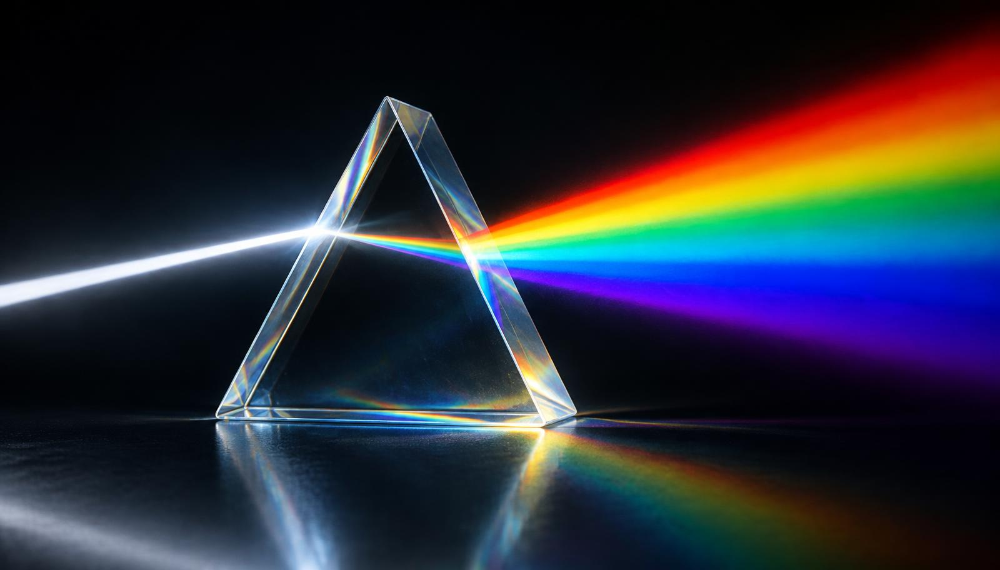
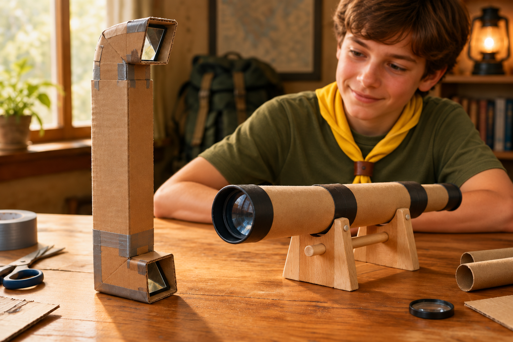
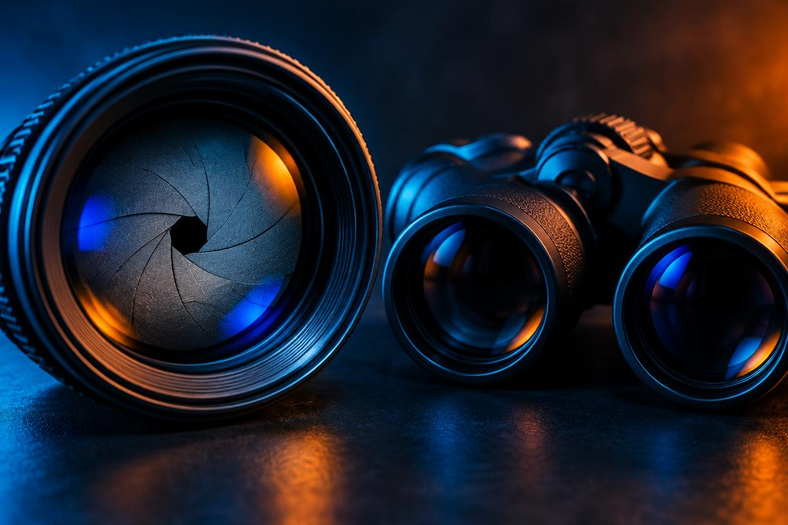

Centro óptico (O)
Ponto no centro da lente, sobre o eixo principal. Todo raio de luz que passa por ele atravessa a lente sem sofrer desvio.

A ciência da luz: como ela viaja, se curva, se reflete e se desfaz em cores. Um guia completo, com todos os requisitos explicados e desenhados.
“E disse Deus: Haja luz; e houve luz.” A luz é uma onda eletromagnética que viaja a quase 300 000 km por segundo no vácuo. Ótica é o ramo da física que estuda seu comportamento — e é graças a ela que existem óculos, câmeras, microscópios, telescópios e até a fibra que leva a internet até sua casa.
Ponto no centro da lente, sobre o eixo principal. Todo raio de luz que passa por ele atravessa a lente sem sofrer desvio.
Ponto do eixo principal onde os raios que chegam paralelos se encontram depois de atravessar uma lente convergente (foco real). Na lente divergente, é o ponto de onde os raios parecem sair (foco virtual). Toda lente tem um foco objeto (Fo) e um foco imagem (Fi).
Distância entre o centro óptico e o foco. Quanto menor, mais “forte” a lente. Seu inverso é a vergência, medida em dioptrias — o famoso “grau” dos óculos: V = 1/f (f em metros).
Ponto do eixo situado ao dobro da distância focal (2f). Um objeto colocado no antiprincipal objeto (Ao) forma imagem no antiprincipal imagem (Ai), com o mesmo tamanho do objeto.
Mais grossa no centro que nas bordas (no ar). Faz os raios paralelos se juntarem num foco real. Distância focal positiva. Usada em lupas e óculos para hipermetropia e presbiopia.
Mais fina no centro que nas bordas. Espalha os raios, que parecem vir de um foco virtual. Distância focal negativa. Corrige a miopia.
Lentes cujas faces são calotas de esferas (ou uma delas plana). São as mais comuns porque são fáceis de polir. Classificam-se em convergentes ou divergentes conforme o formato.
Como o vidro desvia cada cor de forma diferente (o violeta mais, o vermelho menos), cada cor tem um foco próprio. A imagem fica com bordas coloridas. Corrige-se com lentes acromáticas (duas lentes de vidros diferentes coladas).
Mudança de velocidade — e geralmente de direção — da luz ao passar de um meio para outro. Ao entrar num meio mais denso, ela se aproxima da normal. Lei de Snell: n₁·sen i = n₂·sen r. É por isso que um lápis parece “quebrado” no copo d’água.
A luz bate numa superfície e volta para o meio de origem. O raio incidente, o refletido e a normal ficam no mesmo plano, e o ângulo de incidência é igual ao de reflexão. Pode ser regular (espelhos) ou difusa (papel, parede).
Quando a luz vai de um meio mais denso para um menos denso (água → ar) com ângulo maior que o ângulo limite, ela não sai: é 100% refletida. Explica o brilho do diamante, as miragens e o funcionamento da fibra óptica.
Quando a luz atinge um material, três coisas podem acontecer: ela é refletida, refratada (transmitida) ou absorvida. A proporção de cada uma depende do material.
Transparente: a maior parte da luz atravessa e se refrata, aproximando-se da normal; uma pequena parte se reflete (mais quanto mais rasante o ângulo, como no pôr do sol no lago). Absorve um pouco do vermelho — por isso o mar profundo é azul.
Também transparente, mas mais refringente que a água: desvia mais a luz. Uma película fina de óleo sobre a água cria cores de interferência (como bolhas de sabão), pois a luz refletida em cima e embaixo da película se soma ou se anula.
Os elétrons livres do metal impedem a passagem da luz: ele é opaco. A maior parte é refletida (daí o brilho metálico) e o resto é absorvido e vira calor. O ouro e o cobre absorvem mais o azul, por isso parecem amarelados.
Vidro com uma fina camada metálica (prata ou alumínio) atrás. Produz reflexão regular: o ângulo de incidência é igual ao de reflexão. O espelho plano forma imagem virtual, direita, do mesmo tamanho e invertida lateralmente, à mesma distância atrás dele.
Dica para nunca esquecer: no ar, lentes de bordas finas são convergentes e lentes de bordas grossas são divergentes. O nome começa pela face de maior raio.
Para achar a imagem basta traçar dois raios notáveis saindo do topo do objeto: um paralelo ao eixo, que após a lente passa pelo foco imagem; e outro pelo centro óptico, que não se desvia. Onde eles (ou seus prolongamentos) se cruzam, nasce a imagem.
Uma imagem real pode ser projetada numa tela (os raios realmente se cruzam). Uma imagem virtual só é vista olhando através da lente (só os prolongamentos se cruzam). Equação de Gauss: 1/f = 1/p + 1/p′.
Na lente divergente, não importa onde o objeto esteja: a imagem é sempre virtual, direita e menor.
O raio paralelo sai da lente se afastando do eixo, como se viesse do foco objeto; seu prolongamento e o raio pelo centro se cruzam sempre entre o foco e a lente. É a imagem que você vê no olho mágico da porta ou nos óculos de quem tem miopia. Quanto mais perto da lente, maior (mas sempre menor que o objeto) fica a imagem.
O prisma é um bloco de vidro com faces planas inclinadas. A luz branca se refrata ao entrar e ao sair, desviando-se em direção à base. Como o índice de refração do vidro é diferente para cada cor, as cores se separam: é a dispersão, descoberta por Isaac Newton em 1666.
Num prisma de vidro comum com ângulo de 60°, o vermelho (n ≈ 1,51) é o menos desviado, cerca de 38°, e o violeta (n ≈ 1,53) o mais desviado, cerca de 40°. Entre eles aparecem laranja, amarelo, verde, azul e anil.
As cores aparecem quando a luz incide na primeira face com ângulo suficiente (acima de ~28°) e desaparecem quando, dentro do vidro, o raio atinge a segunda face acima do ângulo limite (~41°): ocorre reflexão total. O violeta desaparece primeiro e o vermelho por último.
Materiais transparentes deixam a luz passar em ordem; opacos não deixam passar; e os translúcidos — vidro jateado, fosco ou canelado, papel vegetal — deixam a luz passar, mas espalhada.
A superfície irregular do vidro translúcido funciona como milhares de minúsculas lentes e prismas apontados em todas as direções. Cada raio é refratado para um lado diferente (refração difusa). A luz chega ao outro lado, o ambiente fica iluminado, mas os raios não se reorganizam para formar imagem: vemos apenas vultos borrados. Por isso esse vidro é usado em boxes de banheiro e janelas que pedem privacidade.
A lente convergente reúne toda a energia solar que atinge sua área num pequeno ponto: o foco. Uma lupa de 5 cm concentra a luz numa área centenas de vezes menor, e a temperatura ali passa de 200 °C, suficiente para fazer o material seco entrar em combustão.
Ela faz o contrário: espalha os raios. Seu foco é virtual — os raios apenas parecem vir de um ponto, mas nunca se encontram de verdade. Assim, a energia é distribuída por uma área maior que a da lente, e a superfície recebe menos calor do que sem lente nenhuma. Impossível acender fogo.
I = P / A
Intensidade é potência dividida pela área: diminuir a área (convergente) aumenta a intensidade; aumentar a área (divergente) a diminui.

⚠ Nunca aponte o telescópio ou binóculo para o Sol.

Os dois números gravados no binóculo dizem tudo sobre ele:
aumento × diâmetro da objetiva (mm)
O primeiro número é o aumento: num 6×35 o objeto parece 6 vezes mais próximo; num 7×50, 7 vezes. O segundo é o diâmetro de cada lente objetiva em milímetros: 35 mm ou 50 mm. Quanto maior a objetiva, mais luz entra e mais brilhante é a imagem.
| Modelo | Aumento | Objetiva | Pupila de saída | Melhor uso |
|---|---|---|---|---|
| 6×35 | 6× | 35 mm | 35÷6 ≈ 5,8 mm | Uso geral de dia, campo largo, leve |
| 7×50 | 7× | 50 mm | 50÷7 ≈ 7,1 mm | Noite, mar (padrão naval), astronomia |
É a razão entre a distância focal da lente e o diâmetro da abertura (diafragma) por onde a luz passa:
N = f / D
Uma lente de 50 mm com abertura de 25 mm está em f/2. Número-f pequeno = abertura grande = muita luz e fundo desfocado. Número-f grande = abertura pequena = pouca luz e tudo nítido (maior profundidade de campo). Cada “ponto” da escala reduz a luz à metade:
“Porque em ti está o manancial da vida; na tua luz veremos a luz.” — Salmo 36:9